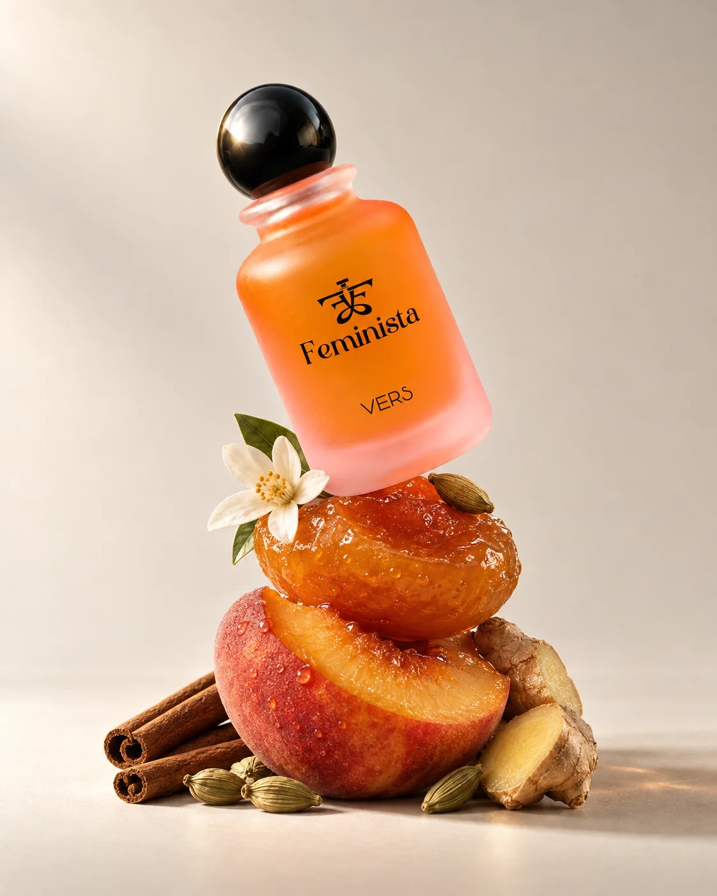
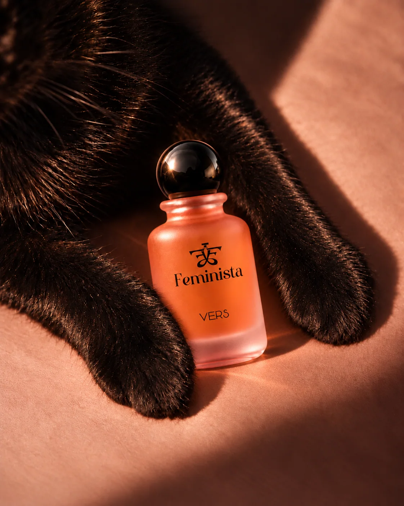

The Intimate · Extrait de parfum
The beauty of contrast
A little unexpected. A little irresistible. Never quite what it seems.
01 · It opens
A subtle warmth
Cinnamon, cardamom and ginger, soft rather than sharp.
- Cinnamon
- Cardamom
- Ginger
02 · The heart
Smooth and tender
Praline and candied fruits folded into white flowers.
- Praline
- Candied Fruits
- White Flowers
03 · It stays
Softness, close
Vanilla, coffee and tonka bean, warm and near the skin.
- Vanilla
- Coffee
- Tonka Bean
- Benzoin
- Musk
Composed without haste
180 days to become itself
Every element given time for its spice, softness and warmth to settle.
₹8,000 · 100 ml
Scroll
Made to stay close
It does not demand attention. It draws people closer.
Vers is created for everyday rituals, intimate occasions and moments of quiet confidence. Softness becomes its strength.

